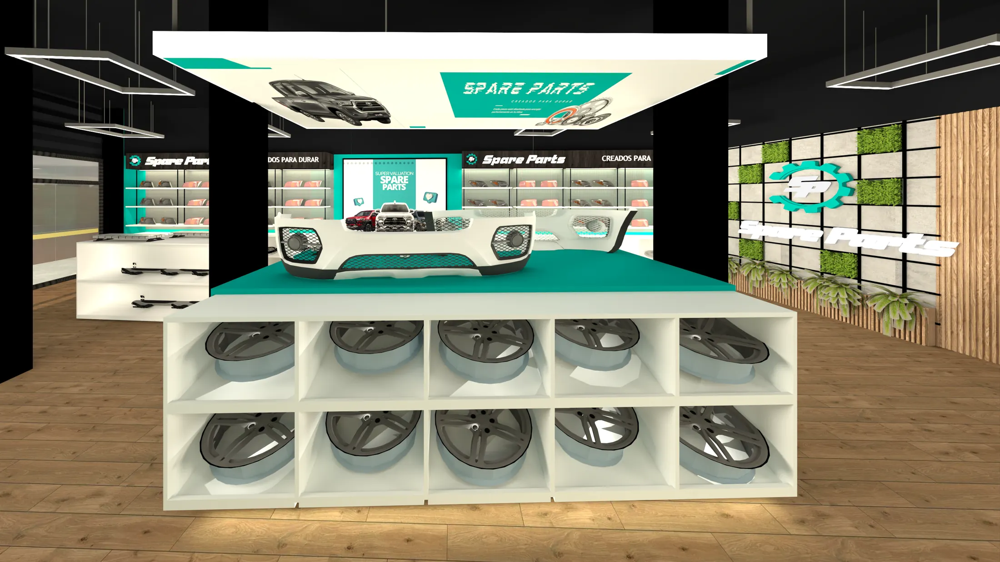
Obra construida · 2M MICON S.A.C.
Spare Parts, Huancayo
Una tienda de autopartes armada a partir del modelo de la cadena, en un local de albañilería confinada que ya existía en Huancayo.
- Cliente
- Spare Parts, cadena de autopartes
- Lugar
- Huancayo, Junín
- Obra
- 3 meses, entre 2024 y 2025
- Local
- 177 m² y mezanine de oficina
- Mi rol
- Arquitecta junior en 2M MICON: levantamiento, planos, modelado 3D y renders, mobiliario, apoyo en la supervisión y coordinación con proveedores
El proyecto en tres pasos
Del modelo de la cadena a una tienda en Huancayo
Spare Parts ya tenía una tienda modelo. En 2M MICON la adaptamos a un local que ya existía en Huancayo y la construimos en unos tres meses.
Paso 1 · El prototipo
La tienda modelo de la cadena
Spare Parts tenía un modelo de tienda para repetir en cada ciudad, de modo que el cliente la reconozca en cualquier lugar.
- Fachada: franja negra con listones, el engranaje turquesa iluminado y una vitrina de vidrio.
- Interior: techo y columnas negros, paneles perforados turquesa e islas blancas de exhibición.
- Luz: lineal y suspendida, sobre el producto.
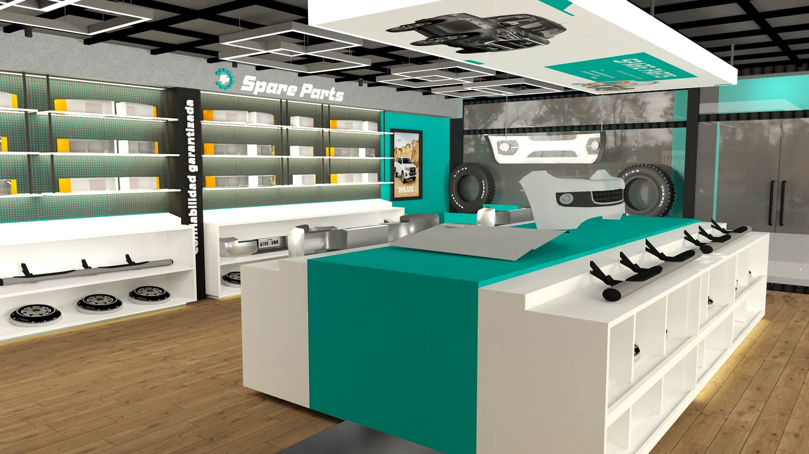
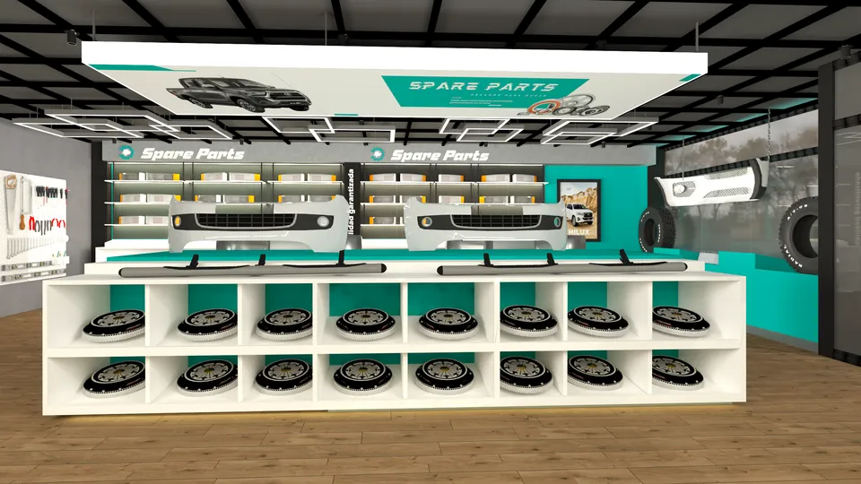
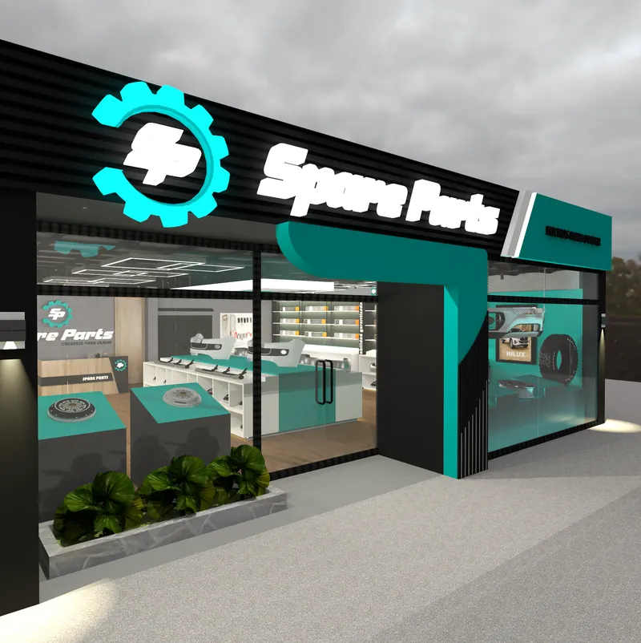
Paso 2 · La adaptación
El mismo modelo, en un local que ya existía
En Huancayo la tienda no se hizo desde cero: el prototipo tuvo que encajar en las medidas y la estructura de un local existente.
- El local9 m de frente y 21.7 m de fondoVitrina y venta adelante; caja, espera, almacén y servicios higiénicos al fondo.
- El local20 columnas de concreto que no se podían moverLas islas, las repisas y la caja se ordenaron según esa trama, y las columnas se pintaron de negro.
- El programaUna oficina, sin quitar área de ventaUn mezanine metálico sobre el fondo del local, con escalera de 12 pasos.
- El localEl pasadizo a la vivienda del propietarioQuedó separado de la tienda, con su propio ingreso.
La fachada
El pasillo
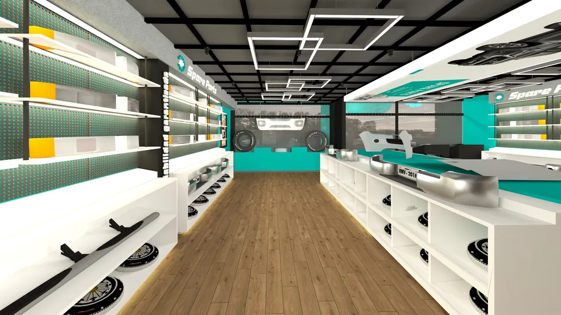
Prototipo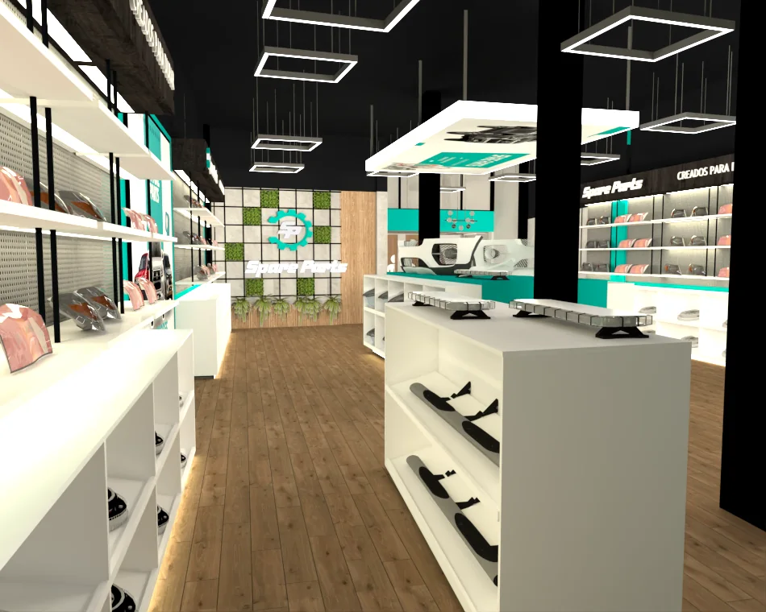
HuancayoAsí quedó el diseño para Huancayo
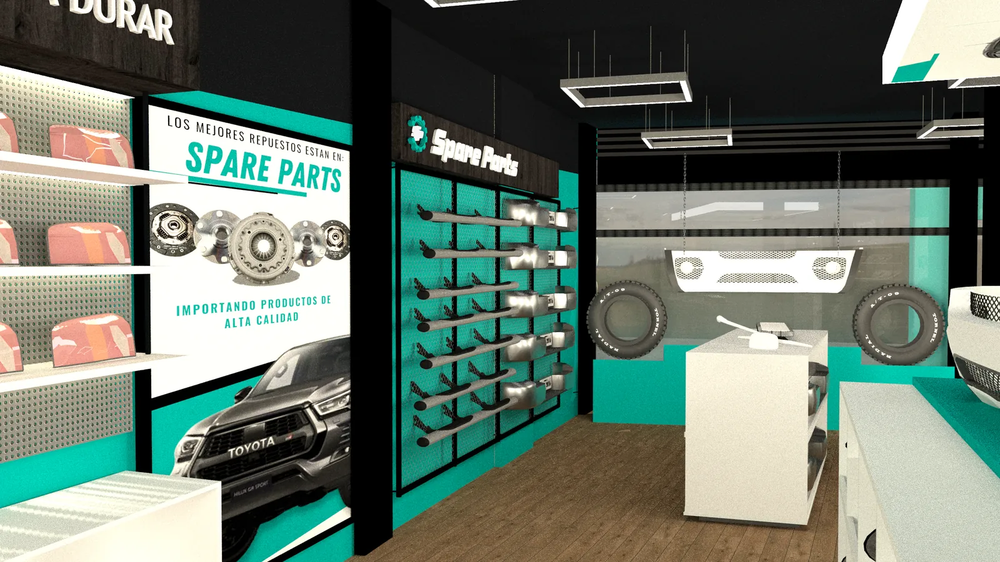
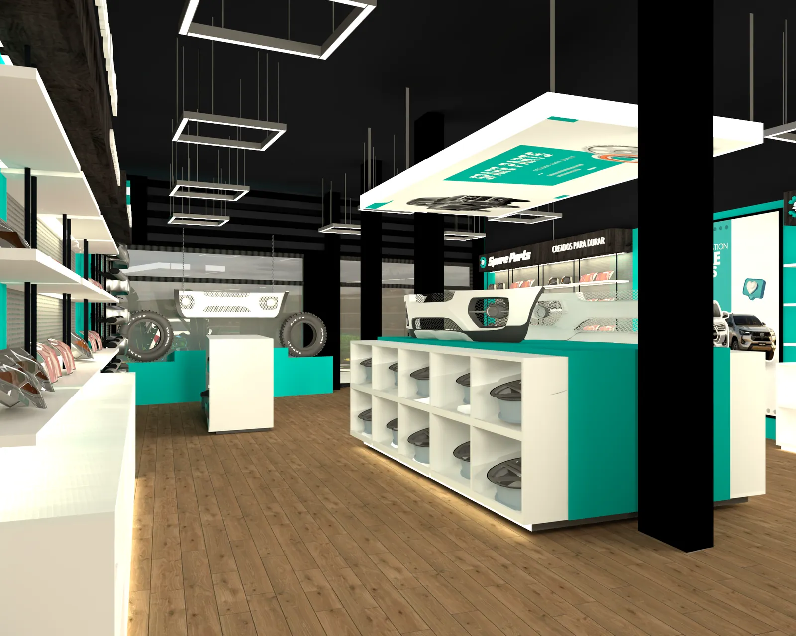
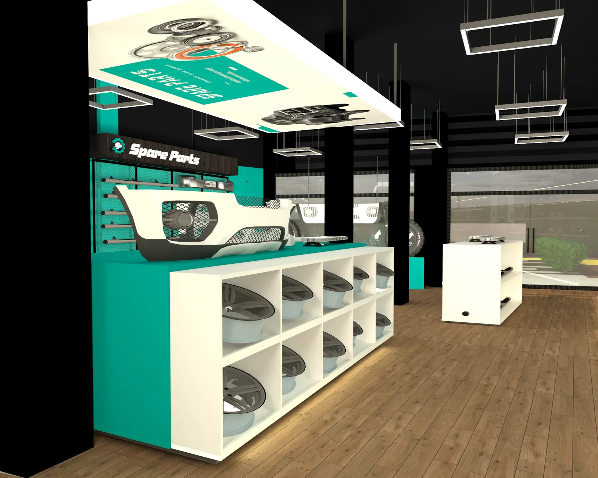
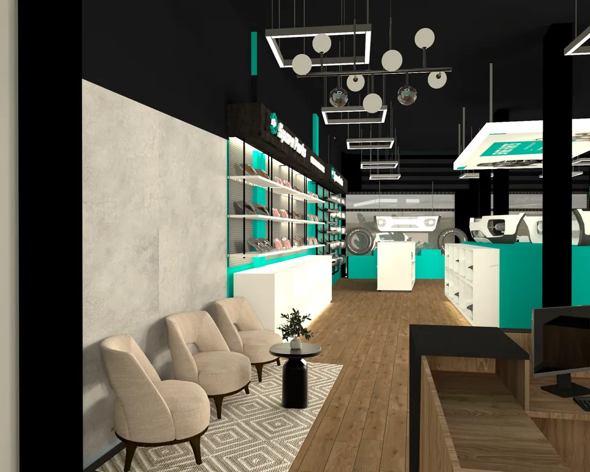
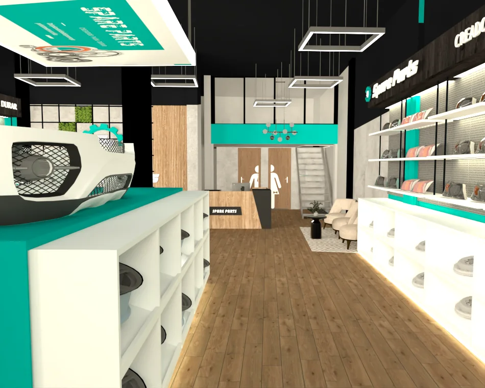
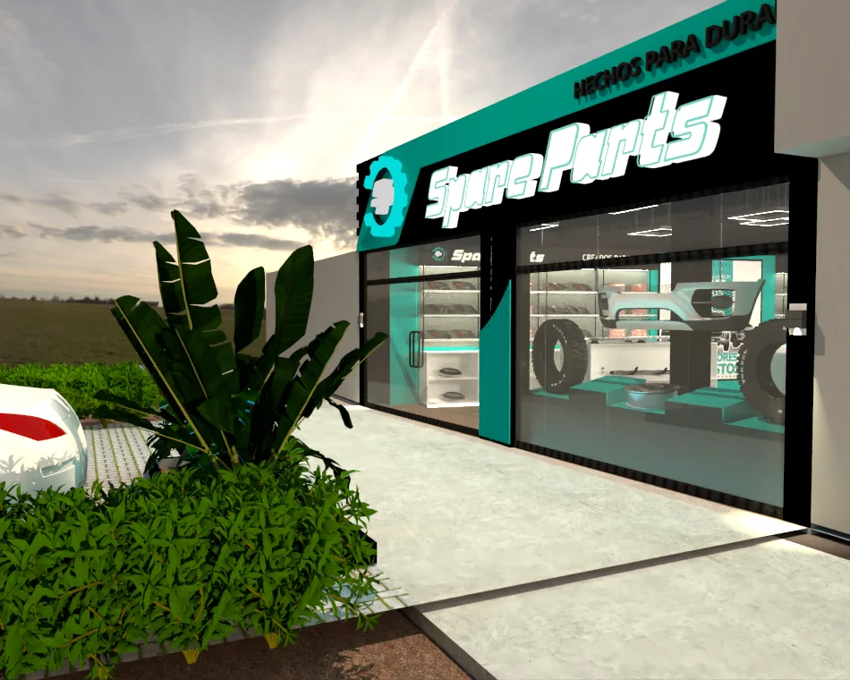
Paso 3 · La obra · planos a escala 1/75
Distribución e instalaciones eléctricas
Los dos planos de la obra. Las islas, las repisas y la caja siguen la trama de columnas que ya había; el plano eléctrico reparte el alumbrado en 11 circuitos.
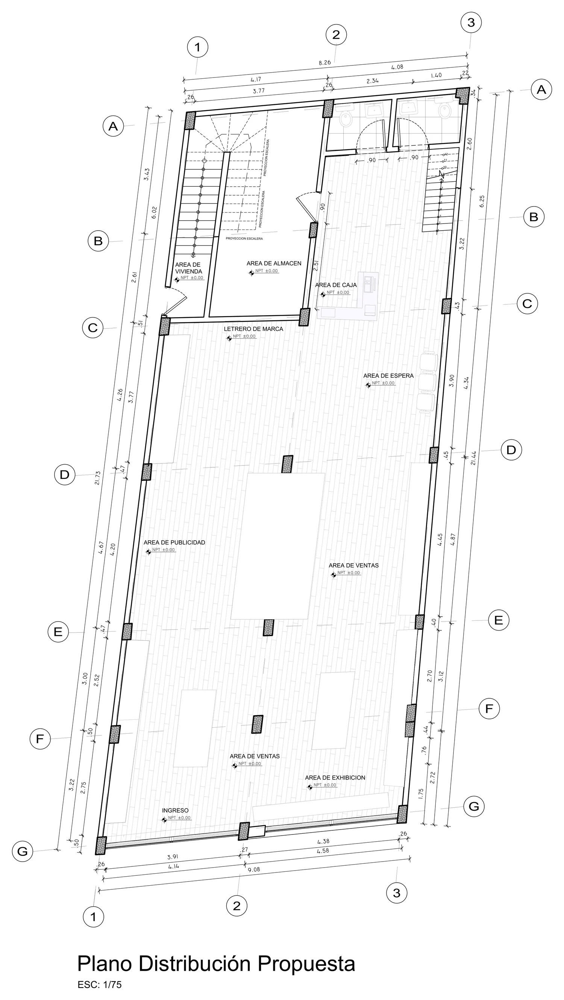
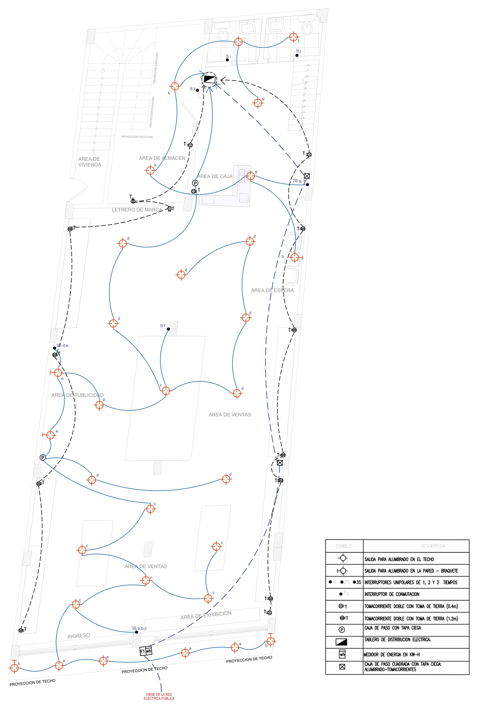
Paso 3 · La obra · modelo 3D
El local en 3D, semana a semana
Modelé el local con la geometría de los planos: muros, las 20 columnas, el mobiliario y las 31 salidas de luz. En «Obra 4D» el modelo sigue el cronograma: el mezanine se arma con columnas, vigas y losa, y la fachada con estructura, revestimiento y vidrio.
Capas visibles
Arrastra para girar · haz clic en el modelo y usa la rueda para acercar · toca un elemento para ver su partida
Paso 3 · La obra · cronograma y presupuesto
Trece semanas de obra, con presupuesto de cadena
Con los metrados de los planos armé el presupuesto con estructura S10 y el cronograma en MS Project, de lunes a sábado. Como es una cadena, se eligieron materiales económicos que dan el mismo aspecto. El Gantt, la curva S y el modelo 3D se mueven con la misma semana.
- Ruta crítica
- Tarea con holgura
- Resumen
- Hito
- Semana elegida
Desliza el cronograma hacia los lados para ver todas las semanas →
Ver el cronograma como tabla
Curva S · costo directo acumulado
Cada tarea reparte su costo en sus días laborables. Pasa el puntero (o usa las flechas) para leer cada semana.
Ver la curva S como tabla semanal
Costo directo por especialidad
Acabados, mobiliario y fachada suman casi seis de cada diez soles.
Resumen del presupuesto
Gastos generales 10 %, utilidad 8 % e IGV 18 %.
Presupuesto detallado · estructura S10
Pliega los títulos para ver subtotales. Las partidas con «APU» abren su análisis de precio unitario.
Especificaciones económicas, como pide una cadena: los mismos materiales de los renders en su línea comercial (vidrio templado de 8 mm, ACM de 3 mm, piso SPC de 4 mm, melamina y luminarias LED comerciales). Precios de mercado 2024–2025, sin IGV; el IGV se suma en el resumen.